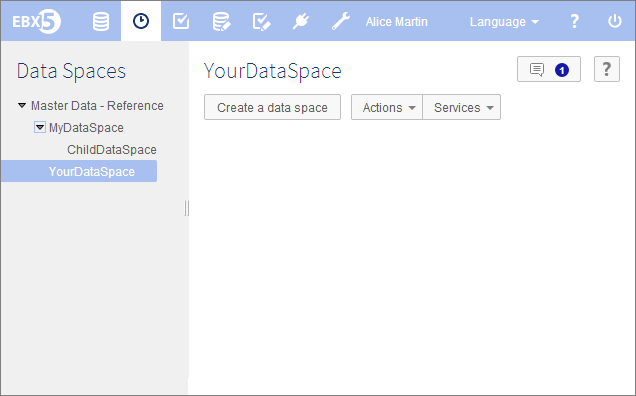

Introduction to data spaces
A data space contains data sets, and is used to isolate different versions of data sets from one another.
In EBX5, you may:
create data spaces (see creation),
label them and describe their purpose and content (see information),
export data as an archive, or import data into a data space and validate it (see import archive and export archive),
compare the content of two data spaces (see actions),
save a copy of the current contents of this data space (see snapshot),
apply the changes performed in a child data space to its parent data space (see merge),
manage access rights for a given data space (see permissions),
close a data space that is no longer required (see closing).
A data space is always created as a child of another data space, except the reference data space, which is the root of all data spaces in the repository.
For detailed definitions of terms, refer to the glossary.
Section contents
Concepts
Data lifecycle is frequently complex. For example, a company needs to manage a current version of its data while working on several updates that will occur in the future. In addition, this company needs to keep track of its projects milestones as well.
EBX5 allows the creation and management multiple data spaces and snapshots. With the use of data space, it is possible to make concurrent updates on a data repository, to compare and merge them.
A snapshot allows you to keep the static state of a data space in case you need to revert to a stable version or detect subsequent updates.

Data space overview
Access within the interface
The navigation pane displays all existing data space in tree view, while the workspace is used to interact with a selected data spaces and lists its snapshots. To manage your data spaces, select Data Spaces in the menu bar.

Associated notions and tools
Snapshot | Frozen picture of a data space content at a point in time. |
Reference data space | Ancestor of every other data spaces, which has no parent and cannot be merged. |
Merge | Copy of the changes made to a child data space to its parent, which requires user arbitration in case of conflicts. |
Relational data space | A relational data space is reserved for data models in relational mode. In this mode, data are managed more directly by the database and some features are not available: for example, it is not possible to create a snapshot or a child data space. See also:Relational mode |
 User guide table of contents
User guide table of contents